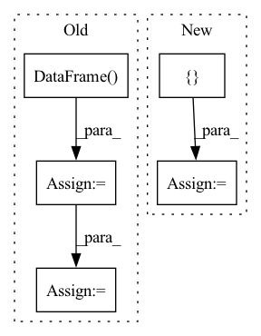

Pattern ID :33704
Before Change
):
// Monkey-patching
data_dir = "/data_dir"
df_model_library = pd.DataFrame(
columns=["entity_type", "entity_type_name", "model_id", "model_path"],
data=[
[
"CELL_COMPARTMENT",
"CELLULAR_COMPONENT",
"path/to/model_1",
f"{data_dir}/path/to/model_1",
],
[
"CELL_TYPE",
"CELL_TYPE",
"path/to/model_2",
f"{data_dir}/path/to/model_2",
],
["CHEMICAL", "CHEBI", "path/to/model_3", f"{data_dir}/path/to/model_3"],
],
)
fake_load_ee_models_library = Mock()
fake_load_ee_models_library.return_value = df_model_library
fake_sqlalchemy = Mock()
fake_create_mining_cache = Mock()
monkeypatch.setattr(
"bluesearch.entrypoint.create_mining_cache.sqlalchemy", fake_sqlalchemy
)
monkeypatch.setattr(
"bluesearch.entrypoint.create_mining_cache.load_ee_models_library",
fake_load_ee_models_library,
)
monkeypatch.setattr(
"bluesearch.database.CreateMiningCache", fake_create_mining_cache
)
monkeypatch.setattr(
"bluesearch.database.CreateMiningCache", fake_create_mining_cache
)
monkeypatch.setattr(
"bluesearch.entrypoint.create_mining_cache.getpass.getpass",
lambda _: "fake_password",
)
// Create temporary sqlite database
if db_type == "sqlite":
db_url = pathlib.Path(tmpdir) / "my.db"
db_url.touch()
// Construct arguments
argv = [
"--data-and-models-dir=/some/fake/path",
f"--db-type={db_type}",
f"--db-url={db_url}",
f"--target-table-name={target_table_name}",
f"--n-processes-per-model={n_processes_per_model}",
f"--restrict-to-models={restrict_to_models}",
]
// Call entrypoint method
// import pdb; pdb.set_trace()
run_create_mining_cache(argv)
// Checks
// Check that CreateMiningCache(...) was called once and get its arguments
fake_create_mining_cache.assert_called_once()
args, kwargs = fake_create_mining_cache.call_args
// Construct the restricted model library data frame
selected_models = restrict_to_models.split(",")
df_model_library_selected = df_model_library[
df_model_library["model_id"].isin(selected_models).tolist()
]
After Change
db_url.touch()
// Construct arguments
argv = [
f"--data-and-models-dir={spacy_model_path}",
f"--db-type={db_type}",
f"--db-url={db_url}",
f"--target-table-name={target_table_name}",
f"--n-processes-per-model={n_processes_per_model}",
f"--restrict-to-etypes={restrict_to_etypes}"In pattern: SUPERPATTERN
Frequency: 4
Non-data size: 5
Instances Fragment ID: 96930663
Project Name: bluebrain/search
Commit Name: 05fe137611fffaab1cdfb9f3c04b32bb8964666d
Time: 2021-06-22
Author: 47669575+EmilieDel@users.noreply.github.com
File Name: tests/test_entrypoint/test_create_mining_cache.py
M Class Name: AnonimousClass
N Class Name: AnonimousClass
M Method Name: test_send_through(9)
N Method Name: test_send_through(7)
M Parent Class:
N Parent Class:
M File Name: tests/test_entrypoint/test_create_mining_cache.py
N File Name: tests/test_entrypoint/test_create_mining_cache.py
M Start Line: 88
M End Line: 163
N Start Line: 85
N End Line: 135
Before Change
// The new names of the columns
column_names = ["title_one", "title_two", "label"]
// A new dataframe for the data we are going to be creating
norm_data = pd.DataFrame(columns = column_names)
// Iterate over the original dataframe (I know it is slow and there are probably better ways to do it)
iloc_data = orig_data.iloc
for idx in tqdm(range(len(orig_data))):
row = iloc_data[idx]
title_left = remove_stop_words(row.title_left)
title_right = remove_stop_words(row.title_right)
// Append the newly created row (title_left, title_right, label) to the new dataframe
norm_data = norm_data.append(pd.DataFrame([[title_left, title_right, row.label]], columns=column_names))
return norm_data
After Change
iloc_data = orig_data.iloc
// Will temporarily store the title data before it gets put into a DataFrame
temp = []
// Iterate over the data
for idx in tqdm(range(len(orig_data))):
row = iloc_data[idx] Fragment ID: 96930677
Project Name: mascerade/supervised-product-matching
Commit Name: f1649e8578f2eeb16d103c694eea39f02f907f37
Time: 2020-09-19
Author: Ultimi450@gmail.com
File Name: src/preprocessing.py
M Class Name: AnonimousClass
N Class Name: AnonimousClass
M Method Name: preprocessing(1)
N Method Name: preprocessing(1)
M Parent Class:
N Parent Class:
M File Name: src/preprocessing.py
N File Name: src/preprocessing.py
M Start Line: 45
M End Line: 56
N Start Line: 49
N End Line: 61
Before Change
num_ambiguous = 0
ambiguous_label_name = "Observed Labels"
display = pd.DataFrame(columns=[ambiguous_label_name, *dataset.features])
for num_labels, group_data in sorted(zip(group_unique_labels, group_unique_data),
key=lambda x: x[0], reverse=True):
if num_labels == 1:
break
group_df = group_data[1]
sample_values = dict(group_df[dataset.features].iloc[0])
labels = tuple(sorted(group_df[label_name].unique()))
sample = pd.DataFrame.from_dict({"index": [labels] + list(sample_values.values())},
columns=[ambiguous_label_name] + list(sample_values.keys()),
orient="index")
n_data_sample = group_df.shape[0]
num_ambiguous += n_data_sample
if context.with_display:
display = pd.concat([display, sample])
display = display.set_index(ambiguous_label_name)
After Change
else:
display = pd.DataFrame.from_records(display_samples[:self.n_to_show])
display.set_index(ambiguous_label_name, inplace=True)
display = [
"Each row in the table shows an example of a data sample "
"and the its observed labels as found in the dataset. "
f"Showing top {self.n_to_show} of {display.shape[0]}",
display Fragment ID: 96930670
Project Name: deepchecks/deepchecks
Commit Name: b0bf20b9abb8067eac01dfc710851aac05ca4564
Time: 2022-06-29
Author: 71635444+yromanyshyn@users.noreply.github.com
File Name: deepchecks/tabular/checks/data_integrity/conflicting_labels.py
M Class Name: ConflictingLabels
N Class Name: ConflictingLabels
M Method Name: run_logic(3)
N Method Name: run_logic(3)
M Parent Class: SingleDatasetCheck
N Parent Class: SingleDatasetCheck
M File Name: deepchecks/tabular/checks/data_integrity/conflicting_labels.py
N File Name: deepchecks/tabular/checks/data_integrity/conflicting_labels.py
M Start Line: 64
M End Line: 103
N Start Line: 71
N End Line: 123
Before Change
ds.map(lambda example: example["subgroup_label"]).batch(
batch_size).as_numpy_iterator())
subgroup_labels = np.concatenate(subgroup_labels).tolist()
df_a = pd.DataFrame( {"example_id": ids, "subgroup_label": subgroup_labels})
bias_table = bias_table[bias_table["example_id"].isin(ids)]
predictions_merge = pd.merge(bias_table, df_a, on=["example_id"])
prob_one = (predictions_merge["subgroup_label"]
== 1).sum() / len(predictions_merge)
num_samples.append(len(predictions_merge))After Change
round_idx = []
subgroup_ids = []
num_samples = []
prob_representation = []
for idx in range(num_rounds):
ds = dataloader.train_ds
bias_table = pd.read_csv(
os.path.join( Fragment ID: 96930668
Project Name: google/uncertainty-baselines
Commit Name: f5b53459d654b40668528e806a24776b53864278
Time: 2022-11-03
Author: no-reply@google.com
File Name: experimental/shoshin/evaluate_model_lib.py
M Class Name: AnonimousClass
N Class Name: AnonimousClass
M Method Name: evaluate_active_sampling(5)
N Method Name: evaluate_active_sampling(4)
M Parent Class:
N Parent Class:
M File Name: experimental/shoshin/evaluate_model_lib.py
N File Name: experimental/shoshin/evaluate_model_lib.py
M Start Line: 34
M End Line: 59
N Start Line: 68
N End Line: 92